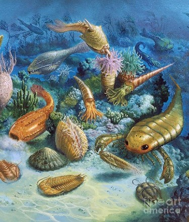
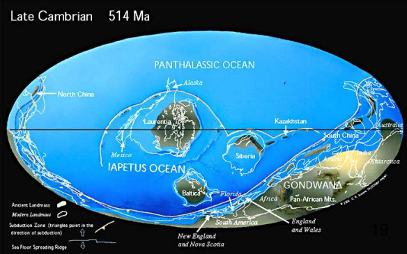

The Cambrian Period marks a major turning point in Earth's history, where diverse forms of life began to rapidly evolve in the oceans.
Life Forms during this Period
Rapid diversification known as the "Cambrian Explosion"; appearance of trilobites, brachiopods, and early mollusks. During this time, life forms in warm seas as oxygen levels rise enough to support life

Geological Features during this Period
Trilobites and other early life forms with shells began to appear in the fossil record during this era. Supercontinent Gondwana forms along with other smaller continents.
